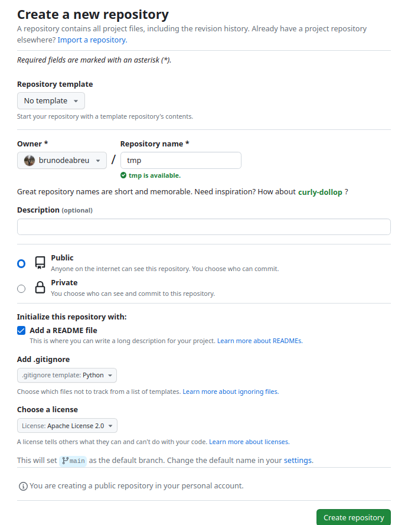
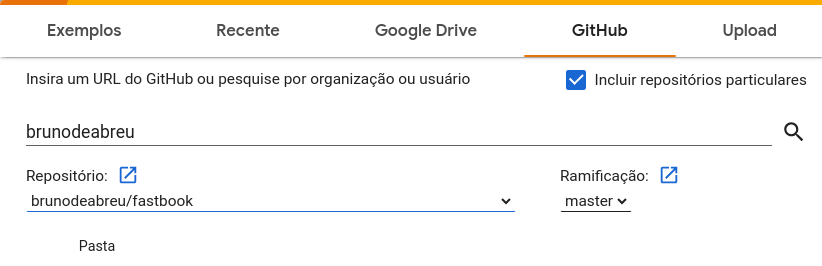

#1 Deep learning for Coders fast.ai - Prep-Work
Pre-Work : a hands-on coding course from fast.ai
1. Terminal
On Windows we can install PowerShell and WSL using, the first time you
wsl --install- Tips :
- Terminal Full Screen :
<Alt+Enter> - Switch between users :
sudo -u <user> -i - Check version and python location :
which python - Install everything in
homedirto do not mix the system python/files with our version of python used to DEV and experiment
- Terminal Full Screen :
1.1 tmux
To install tmux sudo apt install tmux
- https://tmuxcheatsheet.com/
Ctrl + b + %: Divide terminal in the middle verticalCtrl + b + ": Divide terminal in the middle horizontalCtrl + b + direction: Move between terminalsCtrl + b + z: zoom in or zoom out a spefic terminalCtrl + d: close
2. Install python
- Github for conda mini-forge and mamba-forge installer conda-forge/miniforge
- Linux Manbaforge install
wget https://github.com/conda-forge/miniforge/releases/latest/download/Mambaforge-Linux-x86_64.sh- Install Mambaforge, this going to install several libsn
bash Mambaforge-Linux-x86_64.sh - The command
which pythonshould show right now/home/bruno/mambaforge/bin/python
3. Setup fastai
3.1 Setup conda install
To setup fastai in our notebook Github-Fastsetup
- Run the wget to donwload the setupconda.sh and install
wget https://raw.githubusercontent.com/fastai/fastsetup/master/setup-conda.sh
bash setup-conda.sh
4. Install other packages using mamba
Conda and Mamba is two ways of doing the same thing, however today mamba is very fast
Install ipython :
mamba install ipythonPytorch install : pytorch get-started
CPU :
mamba install pytorch torchvision torchaudio cpuonly -c pytorchCUDA :
mamba install pytorch torchvision torchaudio pytorch-cuda=11.7 -c pytorch -c nvidiaTest : ipython -> import torch
Install Jupyter Lab :
mamba install jupyterlab- Create a alias to jupyter lab –no-browser :
alias jl=jupyter lab --no-browser
- Create a alias to jupyter lab –no-browser :
Install ipywidgets :
mamba install ipywidgets
5. Git
Git repository is a folder that contain files and sub-folders that we can store and git keeps a copy of every version of files
5.1 Create new repo
The below figure describe how to create a new repo we can :
- Make the repo private or public
- Add a readme file
- Configure .gitignore
- Choose a license

DO NOT share password or keys on github
5.2 Configure SSH Key o Github and clone .git repository
STEPS :
On terminal create a public key
ssh-keygen, it will create public (id_rsa.pub) and private (id_rsa) keysIn github.com/settings/ssh/ click in
New SSH Keyand add the content of id_rsa.pubNow you will be able to clone the .git repository and save your changes
5.3 Basic Cmds : Commit, push, pull, status
The complete list of git commands
- Commit :
git commit -m <message> - Push :
git push - Pull :
git pull - add :
git add <file> - remove :
git rm <file> - status :
git status
6. Jupyter lab
To start the jupyter notebook we can issue : jupyter lab --no-browser
Tip :
create an alias like
alias jl=jupyter lab --no-browserand just issuejlto start the jupyter lab
7. Clone the Fastai book and install fastai
STEPS:
Go to fastbook on github and click on Fork to create your copy of the book
Clone your version of book :
git clone git@github.com:brunodeabreu/fastbook.gitInstall fastai :
mamba install -c fastchan fastaiInstall fastbook :
mamba install -c fastchan fastbokorpip instal -Uqq fastbook
When we install fastbook it also install fastai
8. Create an enviroment
STEPS :
Create :
mamba create -n tmp 'python<3.10'fastcoreActivate:
mamba activate tmpDeactivate:
mamba deactivate tmp
To return to (base) we can only issue conda activate
9. Creating paperspace notebook
Using https://www.paperspace.com/artificial-intelligence we can get a FREE GPU server.
We can signup with github or gmail account and select gradient it will request you to create a project and after that you can create notebooks/servers.
10. Google Colab
STEPS :
Open colab.research.google.com, you can sigup with your google account
Go to Ferramentas -> Configurações -> Gihub -> Autorizar com Github
Arquivo -> Abrir notebook -> Select your fastbook repository, if you do not have your own copy fork from fastai/fastbook

Select the notebook and open in a new tab
Change the enviroment to TPU : Go to Ambiente de execução -> Alterar tipo de ambiente de exeção -> Select T4 GPU
11. Best option to access the book and notebooks
Open the course.fast.ai on Colab session click on each chapter.